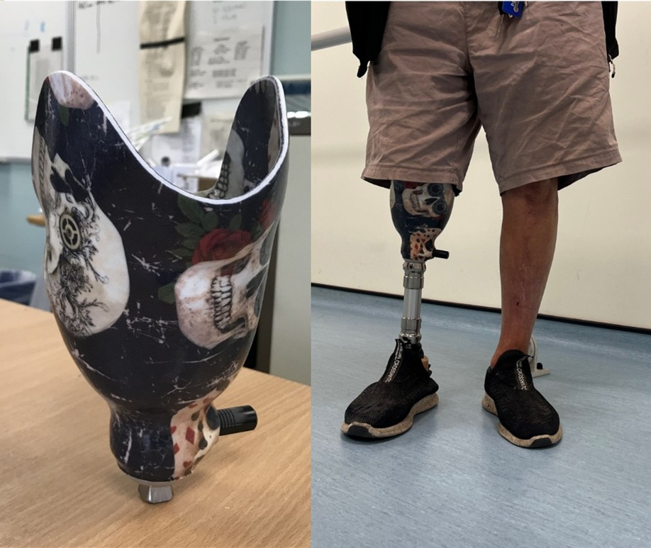

This blog offers informed opinions and perspectives relating to nascent technologies in data-centric engineering. Prof. Alex Dickinson from the University of Southampton discusses the OpenLimb initiative, which generates open-access synthetic residual limb anatomy datasets for prosthetics research.
For ~60,000 people with lower limb amputations in the UK [1], and millions more around the world, discomfort from a poorly fitting prosthetic limb is one of the biggest barriers to comfort, mobility, and both long term physical and mental health. Commonly a ‘socket’ connects the prosthetic limb to the user. The design of this bespoke device is a skilled craft performed by expert healthcare professionals called prosthetists, who aim to balance comfort with a firm coupling that allows physical activity with confidence, relying on experience and iterative trial and improvement.

Advances in computer-aided design and fabrication have not yet delivered their full potential. There has been quite limited application of data to drive prosthetic socket design, and many prosthetists use CAD tools in a way that mirrors the traditional hands-on plaster casting process. Many other good ideas, such as using simulation to predict socket fit, are published by researchers but have not yet translated into clinical use.
The People Powered Prosthetics group, principally based at University of Southampton, aims to change that. Our team’s earlier publication [2] reported on measuring the residual limb’s tissue composition and response to mechanical loads using MRI scans, which led to several requests for us to share our MRI data. MRI and CT scans can provide anatomic shape information which is useful in computer aided design and biomechanical simulations, but they are difficult to access. Due to cost, risk (and in the case of CT, a radiation dose) these scans are not routinely collected in clinics, only if something is wrong, and as personal healthcare data they should be treated with utmost privacy.
We were keen to make our research available to as many people as possible. Funded by UK taxpayers, we felt obliged to share, and there is scope to help improve the generalisability of future biomechanical engineering studies where a lot of prior research has been limited by the researchers’ access to only very small datasets, or single patients. Worse, with relatively few people with amputations around each research institution, failing to share data means repeatedly burdening the same small group of willing participants, inconveniencing them and, in some cases, placing them at unnecessary risk.
However, sharing the raw data meant navigating significant ethical and administrative barriers. Even though we obtained ethical approval and the participants’ consent, we needed to preserve their privacy. We could go through additional ethical approvals and data sharing agreements (DSAs) with all the people requesting our data, but the time and effort would be prohibitive.
Our solution was to develop the OpenLimb initiative, as a way to pool MRI and CT scan images collected for previous research, and generate synthetic residual limb anatomy data which we could share whilst preserving the original research participants’ privacy. We identified an international group of researchers and other custodians who had collected ethically-approved datasets with participants’ consent, proposed the idea, obtained Secondary Data Analysis ethical approval and went through the data sharing agreement process with them. We introduced our first output from the initiative, the OpenLimbTT dataset, in our recent Data-Centric Engineering paper [3]. The dataset starts with an average residual limb which can be stretched and scaled in an anatomical way to let researchers conduct more statistically representative biomechanical engineering work. This tool could also let engineers test their prosthetic limb concepts in virtual ‘worst case’ patients, and we have been excited to see several groups already citing the paper having used the model in their research.

OpenLimb has a lot more development work underway. The OpenLimbTT model only includes scans from four countries and has limited racial diversity, and it also has a considerable gender bias. Fewer women participate in prosthetics research than men [4], and this was reflected in the scans we were able to access. This gap needs to be addressed to avoid perpetuating a gender data bias that might contribute to worse clinical experiences or outcomes for women. We are also working on an OpenLimbTF model for transfemoral (above-knee-amputated) residual limbs, which represent the next-largest patient group after transtibial. This dataset is also available open-access.
We also carefully chose not to share any data associated with the prosthetic socket designs used by the people represented within the OpenLimb datasets. The prosthetic limb users consented for their scans to be used in research, but we consider socket designs to contain intellectual input from the prosthetists, so we do not consider it appropriate to share them. We also do not see it as the engineer’s role to design prosthetic sockets. However, via collaborative research with prosthetists and prosthetic design software company Radii Devices Ltd., using related methods we have developed bespoke evidence-generated prosthetic socket algorithms intended to be used as a starting point for clinical fitting, and these are performing well in an Innovate UK-funded NHS multicentre trial, and in several clinics across the UK and USA [5].
We hope that the broader impact of the OpenLimb initiative will be significant. By providing researchers, clinicians, and designers with an ethical and openly-available anatomical reference and lowering the barrier to data-informed socket design, it opens the door to more objective, personalised, and testable prosthetic innovations, helping to move prosthetic care from craft toward evidence led engineering.
Competing Interest: Prof. Alex Dickinson is a Professor of Biomechanical Engineering at the University of Southampton. His research focusses on the biomechanics and design of prosthetic limbs. He co-founded the People Powered Prosthetics group, works in the Bioengineering Science Research Group, and he is a Fellow of the Institution of Mechanical Engineers and the Higher Education Academy. In addition, he is a cofounder of Radii Devices Ltd., a University of Southampton spinout that develops data-driven software for prosthetic socket design, and has a financial interest in the company.
Keywords: Prosthetic Limb; Sparse Data; Statistical Shape Model; Transtibial Amputation
This is the blog for Data-Centric Engineering, an open-access journal published by Cambridge University Press and supported by the Lloyd’s Register Foundation. You can also find us on LinkedIn. Here are instructions for submitting an article to the journal.